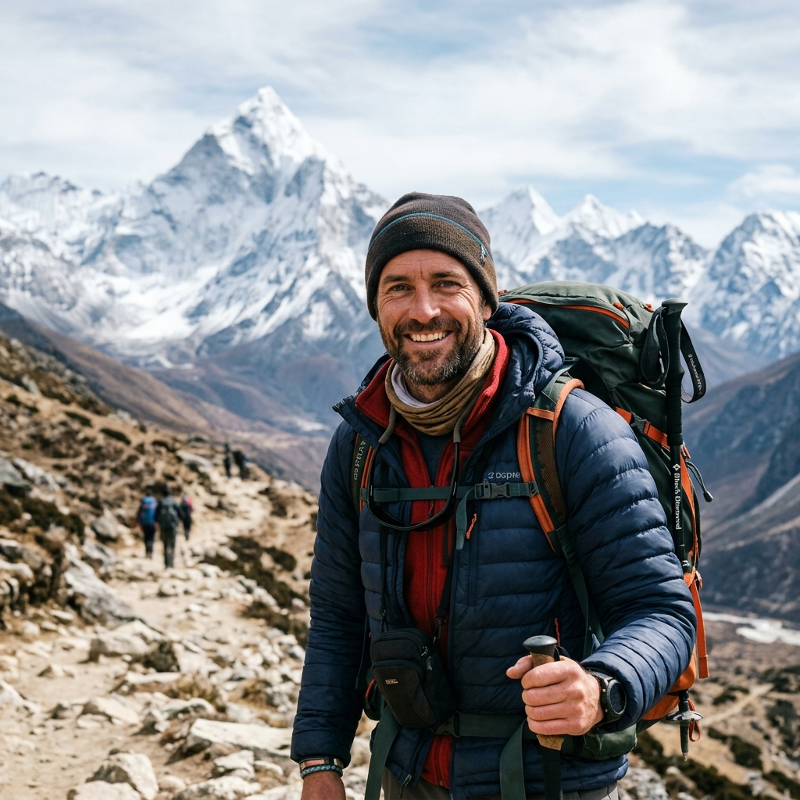
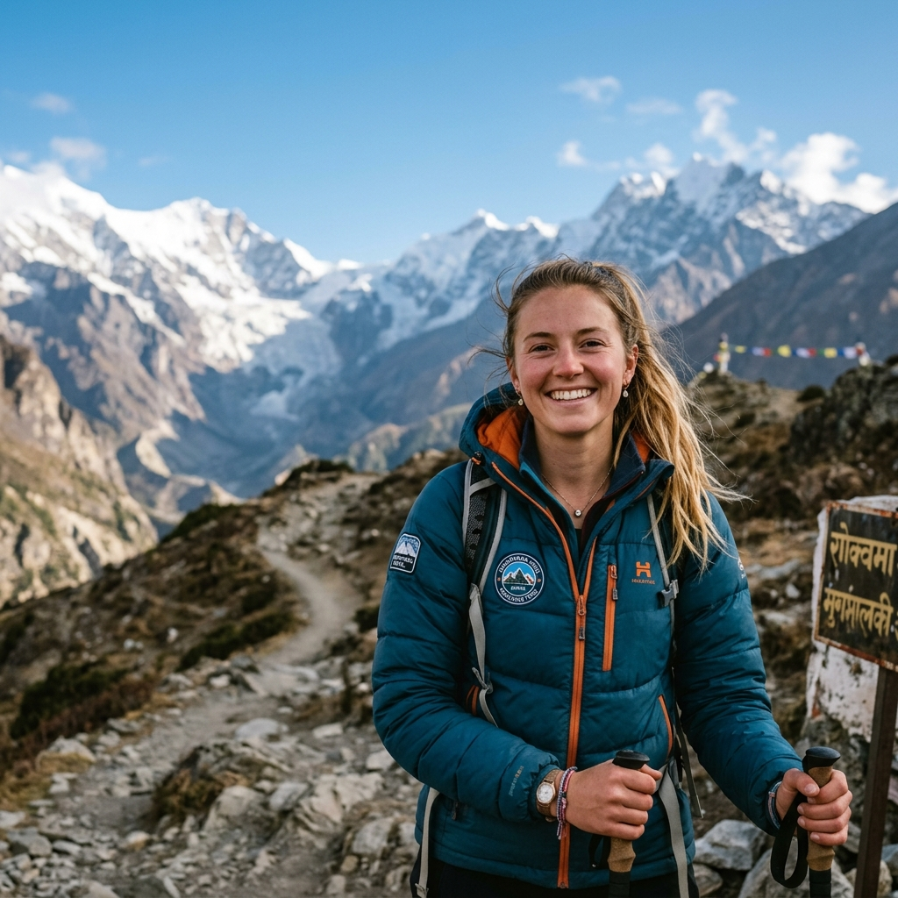
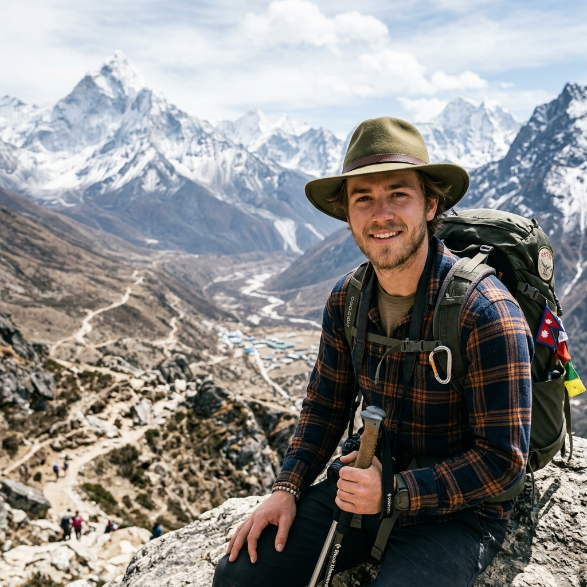
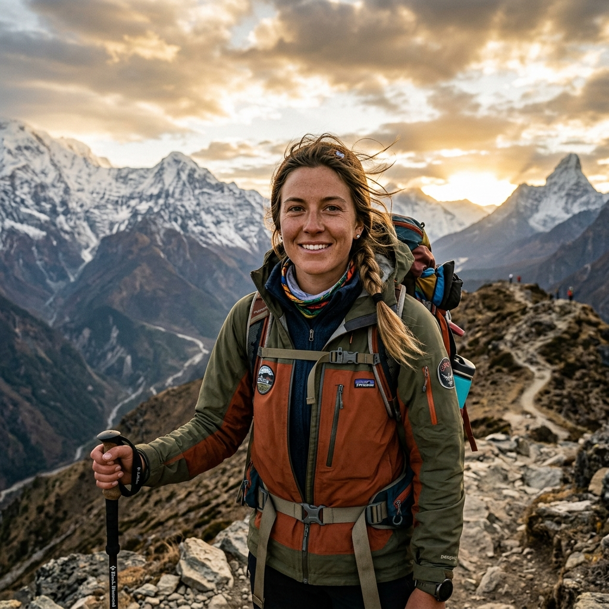

Our Everest Base Camp trek with Namaste Hiking Trek went beyond every expectation we had. What first pulled us towards them was their strict safety protocol and personal care. From the landing at Lukla to reaching Everest Base Camp (5,364m) and Kala Patthar, Sagar and the team made sure we were comfortable, safe, and hydrated every single day!
Everest Region • Classic Himalayan Expedition
5.0
reviews on TripAdvisor
5.0
★★★★★
169 reviews on Google
Kanchenjunga Base Camp Trek
An epic expedition to both North (Pangpema) and South (Ramche) base camps of Mount Kanchenjunga (8,586m) in Nepal's wild eastern frontier.

Travelers' Choice
Best of the Best 2026


Key Trip Facts
Duration
14 days
Difficulty
Moderate
Max Altitude
5,545 m
Destination
Nepal
Activity
Trekking
Accommodation
Hostels & Guesthouses
Transport
Both way Flight
Meals
B.D.L.
Season
Sep-October & Mar-May
Trek Starts
Lukla
Trek End At
Lukla
Trek Region
Everest
Package Start Point
Kathmandu
Package End Point
Kathmandu
Trek Overview
The 14-day Kanchenjunga Base Camp Trek is the ultimate bucket-list adventure in the Nepalese Himalayas. Beginning with a scenic mountain flight to Lukla, the route follows the historic footprints of Sir Edmund Hillary and Tenzing Norgay Sherpa along the Dudh Koshi river.
Highlight features include acclimatization days in Namche Bazaar, visiting Tengboche Monastery under the shadow of Ama Dablam, standing on Khumbu Glacier at Everest Base Camp (5,364m), and watching the sunrise over Mt. Everest from Kala Patthar (5,545m).
Want to know more about this trek?
Chat with us — real trekking experts, not bots.
Replies within 6–7 hours
Kanchenjunga Base Camp Trek Highlights
These aren’t promises pulled from a brochure — they’re the moments our 600-800 trekkers each year keep mentioning in their reviews, in the office when they get back, and in messages months later.
Stand at Everest Base Camp (5,364 m). The walk from Gorakshep is 6 to 7 hours of slow going across rocky glacial debris, with the Khumbu Icefall directly above and Nuptse, Lhotse, and Pumori closing in on three sides. You’re standing where every summit climber sleeps the night before their push.
Climb Kalapatthar (5,545 m) for the actual Everest view. Sunrise or late afternoon — your guide reads the cloud pattern that week and times it for whichever gives the sharper photo. From the summit you see Everest, Nuptse, and Changtse aligned across the horizon.
Fly into Lukla on a 25-minute mountain flight. Tenzing-Hillary Airport (2,860 m) has a 527 m sloped runway built into the side of a hill. It’s a remarkable approach. Bring something to grip with both hands if you’re nervous about turbulence.
Acclimatize the right way. Two full rest days, one at Namche Bazaar (3,440 m) and one at Dingboche (4,410 m). Our guides carry a pulse oximeter and check your oxygen saturation twice daily from Namche onward — this is what most of our reviews mention, that they always felt monitored without feeling rushed.
Spend time at Tengboche Monastery (3,860 m). The largest monastery in the Khumbu, with Ama Dablam framed directly behind it. Afternoon puja is open to visitors when the monks are in residence — your guide will let you know if the timing works for your group.
Walk the Khumbu Glacier moraine. Between Lobuche and Gorakshep, you trace the edge of one of the highest glaciers in the world. On a quiet morning you can actually hear it shifting underneath you.
Cards, momos, and stories in the teahouse dining room. This isn’t in any brochure, but it’s what guests like Sagar’s, Shikhar’s, and KP’s groups bring up most often — the evenings playing cards with your guide in the wood-stove-heated common room, learning a Nepali phrase or two.
Cross the high suspension bridges over the Dudh Koshi. The bridges between Phakding and Namche — strung with hundreds of prayer flags, swaying just enough to make you watch your feet — are one of the trek’s most photographed sections for a reason.
Spot Himalayan tahr and the danphe pheasant. Sagarmatha National Park is genuine wildlife habitat. Early starts above Tengboche give you the best chance of seeing tahr on the slopes and the danphe (Nepal’s iridescent national bird) in the rhododendron forest.
Make it back as a group. Our guides and porters are paid for the full trip whether you finish or not, so they have no reason to push you when you shouldn’t go on — and every reason to help you reach base camp safely. In the last two seasons, the great majority of our trekkers have completed the route. The few who didn’t were turned around early by altitude, not by anything that could have been pushed through.
Why Book the Kanchenjunga Base Camp Trek with Namaste Hiking Trek?
Most operators in Kathmandu can get you to base camp. The difference is in what happens around the trek — before you arrive, during the harder days, and when something doesn’t go to plan. These are the things our guests from across the world keep writing about in their TripAdvisor reviews as what actually mattered to them. We’re currently ranked #2 out of more than 2,900 trekking agencies in Nepal on TripAdvisor — a position we don’t take lightly, and one that comes from genuinely hard work on every single trip rather than marketing.
Guides who've worked the Khumbu for 6 to 7 years with us
not seasons, years. Sujan, Sharad, Bishal, Sandip, Biraj, Prem — these names appear over and over in our reviews because they’re the same faces returning every season. They know which teahouses cook the best Dal Bhat in Dingboche, which days the Tengboche puja is open, and which trekkers need slowing down before anyone says it out loud. Make sure you read our reviews before booking the trek
100% guaranteed departures
Every date on our calendar runs, with no minimum group size required. If you book a solo private trek, it still runs as a solo private trek. We don’t cancel you off a date because the numbers didn’t work out.
You see your group before you arrive
Through our client portal you can check who else is on your departure — names, ages, countries — so there’s no awkward first meeting in the office. Most of our group trekkers message each other on WhatsApp before they fly out.
A real pre-trek briefing at the office
You sit down at our office in NayaBazar with your guide and walk through the route, altitude protocol, packing check, weather forecast, and anything else on your mind. It’s usually 60 to 90 minutes. Most clients tell us this is where the trip stops feeling abstract.
24/7 replies from real people you'll meet
Lal, Kamal and Hemlal handle pre-trek messages personally — not a chatbot, not a shift worker. On WhatsApp during Nepal hours we usually reply within minutes; overnight, within a few hours. Once you’re on the trail, your guide carries a working SIM and we can be reached through them.
Private airport pickup and drop-off, included
A driver with a name card of Namaste Hiking Trek meets you at Tribhuvan International, takes you to your hotel, and the same arrangement gets you back at the end. No queueing for a prepaid taxi after a 14-hour flight.
Sleeping bag and down jacket rentals at the office
USD 15 each for the trip. Trekking poles, crampons, and other gear available to buy at reasonable prices. If you arrive with nothing but boots, we can have you fully kitted out the morning before departure.
Complimentary Namaste Hiking Trek-branded waterproof duffle bag
when you book with a porter (returned after the trek). It’s sized to fit the 20 kg porter weight limit so you don’t have to think about packing geometry.
A booking system that doesn't bury you in emails
Book and pay by card, upload your passport scan, insurance PDF, and flight details directly through app.namastehikingtrek.com. Update your inbound flight up to the day before — you don’t have to email us each time something changes. We built it ourselves around how we actually run trips, and it’s the piece of our operation we’re most quietly proud of.
24/7 emergency support from a local team that picks up
When something goes wrong on the trail — a sudden altitude issue, a teahouse mix-up, a flight cancellation back home you need to work around — you don’t wait. Message us on WhatsApp and someone in our Kathmandu office picks it up immediately, day or night. Because we’re local, we can act on it the same hour: re-route, re-book, send a horse, arrange a helicopter — whatever the situation actually needs.
Kanchenjunga Base Camp Trek Itinerary: Day by Day Details
Our detailed 14-day itinerary is designed to maximize safety and acclimatization, ensuring you have the best possible chance of standing at the foot of the world's highest mountain. Review the daily hiking hours, elevation profiles, meals, and overnight stops below.
Day 1: Arrival in Kathmandu & Transfer to Hotel
Kathmandu – 1,400 m / 4,593 ft
Transfer time: 20 to 30 minutes
Accommodation: 3★ Hotel in Kathmandu
Activity: Pre-trek briefing & Welcome Dinner
Welcome to Kathmandu! Upon arrival at Tribhuvan International Airport (TIA), our representative will warmly welcome you with a traditional marigold garland and transfer you to your hotel in Thamel. You can rest, refresh, and explore the bustling streets of Thamel.
In the evening, we will gather at our office for a detailed pre-trek briefing. We will review your permits, inspect your trekking gear, introduce your Sherpa guide, and answer any last-minute questions. We'll conclude the evening with a delicious welcome dinner at an authentic Nepalese restaurant.


Day 2: Kathmandu to Lukla (Flight) to Phakding
Phakding – 2,610 m / 8,563 ft – 3 to 4 hours
Trek time: 3 to 4 hours
Flight time: 35 to 40 minutes
Accommodation: Tea House Lodge
Trek Distance: 8.2 km / 5.1 miles
Due to changes in the regulations and upgrades at the domestic airport in Kathmandu, flights to Lukla will likely operate out of Manthali Airport in Ramechhap District in the major season time, March April and Mid September to Mid November.
This involves a four-hour drive from Kathmandu at night. The flight from Manthali will depart early in the morning and take 20 minutes.
Our journey starts with the legendary Lukla flight—a 30-minute flight with breathtaking views of terraced hills, deep valleys, and the distant peaks of the Everest region. Lukla's Tenzing-Hillary Airport, located at 2,860m, is renowned for its unique setting and serves as the gateway to the Khumbu. After organizing our gear and meeting our porters, we begin trekking downhill along the Dudh Koshi River valley, passing small Sherpa farms and hand-carved mani stones to reach Phakding.


Day 3: Phakding to Namche Bazaar
Namche Bazaar – 3,440 m / 11,286 ft – 5 to 6 hours
Trek time: 5 to 6 hours
Accommodation: Tea House Lodge
Trek Distance: 11 km / 6.8 miles
Elevation Gain: +830 m / 2,723 ft
We continue our trek along the banks of the Dudh Koshi River, crossing several high suspension bridges decorated with prayer flags, including the famous Hillary Suspension Bridge. We pass through the entrance of Sagarmatha National Park at Monjo, where permits are checked.
From Monjo, we descend to the riverbed and then begin the challenging, steep climb up to Namche Bazaar. The climb is rewarded with our first glimpse of Mount Everest peeking through the tree line (weather permitting). Namche Bazaar is a vibrant mountain town, built on a horseshoe-shaped hillside, filled with cafes, bakeries, and gear shops.


Day 4: Acclimatization Day in Namche Bazaar
Namche Bazaar – 3,440 m / 11,286 ft
Hike time: 3 to 4 hours
Activity: Acclimatization Hike to Everest View Hotel
Accommodation: Tea House Lodge
Max Elevation: 3,880 m / 12,730 ft
This is our first scheduled acclimatization day. Staying active is key to adapting to the thin air, so we take a scenic morning hike to the Everest View Hotel at 3,880m. The trail climbs steeply above Namche, passing the Syangboche airstrip, and rewards us with a jaw-dropping 360-degree panorama of Everest, Lhotse, Nuptse, and the iconic Ama Dablam.
After enjoying a cup of hot tea at the hotel terrace, we return to Namche Bazaar for lunch. You have the afternoon free to visit the Sherpa Culture Museum, browse local shops, or enjoy a coffee and pastry at the famous Namche bakeries.
Day 5: Namche Bazaar to Tengboche
Tengboche – 3,867 m / 12,687 ft – 5 to 6 hours
Trek time: 5 to 6 hours
Accommodation: Tea House Lodge
Trek Distance: 9.5 km / 6 miles
Elevation Gain: +427 m / 1,401 ft
The trail from Namche is spectacular, winding high above the Imja Khola river with continuous views of Everest, Lhotse, and Ama Dablam. We descend through rhododendron forests to the riverbed at Phunki Thenga for lunch, where water-driven prayer wheels spin continuously.
After lunch, we tackle the steep climb through pine forests to Tengboche. Tengboche is situated on a high ridge and is famous for the Tengboche Monastery, the largest and most significant Buddhist monastery in the Khumbu region. We can attend the evening prayer ceremony inside the monastery and enjoy a magnificent sunset over the surrounding peaks.
Day 6: Tengboche to Dingboche
Dingboche – 4,410 m / 14,468 ft – 5 to 6 hours
Trek time: 5 to 6 hours
Accommodation: Tea House Lodge
Trek Distance: 10.8 km / 6.7 miles
Elevation Gain: +543 m / 1,781 ft
We descend through beautiful forests to Deboche, crossing the Imja Khola on a scenic suspension bridge. The trail then ascends gradually, passing carved mani walls and the traditional Sherpa village of Pangboche. The view of Ama Dablam from here is exceptionally close and majestic.
We continue trekking up the valley, entering the alpine zone where the trees disappear, replaced by low shrubs and dry grasses. We enter the Imja Valley and climb a final ridge to reach the summer settlement of Dingboche. Dingboche is unique for its stone-walled fields protecting barley and potato crops from the cold winds.
Day 7: Acclimatization Day in Dingboche
Dingboche – 4,410 m / 14,468 ft
Hike time: 3 to 4 hours
Activity: Acclimatization Hike to Nangkartshang Peak
Accommodation: Tea House Lodge
Max Elevation: 5,100 m / 16,732 ft
Our second acclimatization day is spent in Dingboche. To help our bodies adjust to the altitude, we take a steep acclimatization hike up Nangkartshang Peak (5,100m) located immediately above the village. The climb is slow going but offers spectacular views of Makalu (the 5th highest mountain in the world), Lhotse, Island Peak, and the massive north face of Ama Dablam.
We climb as high as comfortable before descending back to Dingboche for lunch and rest. The afternoon is perfect for relaxing, reading, or socializing in one of the local teahouse cafes.
Day 8: Dingboche to Lobuche
Lobuche – 4,940 m / 16,207 ft – 4 to 5 hours
Trek time: 4 to 5 hours
Accommodation: Tea House Lodge
Trek Distance: 8.5 km / 5.3 miles
Elevation Gain: +530 m / 1,739 ft
The trek begins with a gentle climb along the wide valley floor before ascending steeply to the ridge of Dughla (Thokla). We stop at Dughla for a quick lunch before tackling the steep, rocky climb up the Thokla Pass (4,830m). At the top of the pass, we find the poignant memorials dedicated to climbers who lost their lives on Everest, including Scott Fischer and Rob Hall.
From the pass, the trail levels out and climbs gradually along the lateral moraine of the Khumbu Glacier. The air is visibly thinner, and the temperature drops as we reach the small settlement of Lobuche, nestled beneath the peaks of Lobuche East and Nuptse.
Day 9: Lobuche to Gorak Shep & Everest Base Camp & Return
Gorak Shep – 5,164 m / 16,942 ft (Trek: 6 to 7 hours)
Trek time: 6 to 7 hours
Accommodation: Tea House Lodge
Trek Distance: 13 km / 8 miles
Max Elevation: 5,364 m / 17,598 ft
Today is the big day! We start early, trekking along the rocky moraine of the Khumbu Glacier towards Gorak Shep, the highest permanent settlement on our route. The trail is rough, crossing loose rocks and glacial debris with views of Nuptse and Pumori. After a couple of hours, we reach Gorak Shep, check into our lodge, and have an early lunch.
After lunch, we leave our heavy packs and begin the 3-hour trek to Everest Base Camp (5,364m). We walk along the edge of the glacier, navigating rocky ridges and ice falls. Standing at Everest Base Camp, surrounded by the Khumbu Icefall, Nuptse, and West Cwm, is an unforgettable experience. After celebrating and taking photos, we retrace our steps back to Gorak Shep for a well-deserved dinner and sleep.
Day 10: Hike to Kala Patthar for Sunrise & Trek to Pangboche
Pangboche – 3,985 m / 13,074 ft – 7 to 8 hours
Trek time: 7 to 8 hours
Accommodation: Tea House Lodge
Trek Distance: 16 km / 10 miles
Max Elevation: 5,545 m / 18,192 ft
In the early morning, we will start our hike to Kalapatthar viewpoint (5545 m). It takes about 1-2 hours to get on the top. The Kalapatthar vantage point is the best place to relish the view of Everest and the panoramic Khumbu Himalayas. You will reach the lap of Pumori mountain and will be surrounded by the majesty mountains. The Scenery Mountains look splendid from the top of the Kalapatthar. Everest seems so close and massive than far away. Besides Everest, you can be immersed in the majesty scenes of Khumbutse, Lhola, Amadablam, Pumori, Nuptse, Lhotse, and Thamserku look spectacular from the top. We will return to Gorakshep within 45 minutes from Kalapatthar and have breakfast at the lodge. After breakfast, we will continue our trek back to Pangboche via Lobuche, Thukla and Pheriche village then eventually reach to Pangboche village.
Day 11: Pangboche to Namche Bazaar
Namche Bazaar – 3,440 m / 11,286 ft – 5 to 6 hours
Trek time: 5 to 6 hours
Accommodation: Tea House Lodge
Trek Distance: 14 km / 8.7 miles
Elevation Loss: -545 m / 1,788 ft
We leave Pangboche and descend to the Imja Khola, passing through Deboche and climbing back up to Tengboche. From Tengboche, we make the long, steep descent through rhododendron and pine forests back to Phunki Thenga, where we cross the river.
We then climb the scenic, winding high trail back towards Namche Bazaar. As we descend to lower altitudes, breathing becomes significantly easier. We return to Namche Bazaar in the afternoon, where you can celebrate your EBC success with a hot shower, a cold beer, or a delicious bakery treat.
Day 12: Namche Bazaar to Lukla
Lukla – 2,860 m / 9,383 ft – 6 to 7 hours
Trek time: 6 to 7 hours
Accommodation: Tea House Lodge
Trek Distance: 19 km / 11.8 miles
Elevation Loss: -580 m / 1,903 ft
This is our final day of trekking. We descend steeply from Namche Bazaar down to the Hillary Suspension Bridge and exit the Sagarmatha National Park at Monjo. We then follow the Dudh Koshi River valley downhill, crossing several familiar suspension bridges.
We pass through Phakding and continue with a gradual uphill climb to Lukla. Reaching Lukla marks the end of our trekking journey. In the evening, we hold a celebratory farewell dinner with our guides, Sherpas, and porters, thanking them for their hard work and dedication.
Day 13: Lukla to Kathmandu (Flight)
Kathmandu – 1,400 m / 4,593 ft
Flight time: 35 to 40 minutes
Transfer: 20 to 30 minutes (or 4-hour drive if seasonal airport change)
Accommodation: 3★ Hotel in Kathmandu
Activity: Souvenir Shopping & Farewell Dinner
We take an early morning scenic flight from Lukla back to Kathmandu (or Manthali Airport, followed by a drive to Kathmandu, depending on seasonal flight operations). Upon arrival in Kathmandu, you will be transferred back to your hotel in Thamel.
You have the rest of the day free for shopping, sightseeing, or relaxing. In the evening, we will host a special farewell dinner to celebrate your successful Everest Base Camp trek and share memories of the journey.
Day 14: Final Departure
Kathmandu – 1,400 m / 4,593 ft
Transfer time: 20 to 30 minutes
Activity: Airport Transfer for International flight
Your Everest Base Camp adventure concludes today. Our representative will pick you up from your hotel and transfer you to Tribhuvan International Airport (TIA) approximately 3 hours before your scheduled international flight. As you fly home, you'll carry lifetime memories of the mighty Himalayas and the warm hospitality of the Sherpa people.
Not satisfied with this Itinerary?
Are you interested on planning custom trip? It only takes 2 minutes.
Includes
Local transfers for your international flight x 2 (arrival/departure)
Airport pick-up and drop-off by private vehicle to your hotel in Kathmandu.
Local transfers for your domestic flight x 2
Vehicle transfers between your hotel and the domestic airport terminal in Kathmandu.
Kathmandu Lukla Kathmandu Flight
Scheduled mountain flights as listed in the itinerary; weather delays are possible.
Guide for 12 Days, Porter for 11 Days
Licensed, English-speaking local guide — salary, insurance, meals and lodging all covered.
Sagarmatha National Park Entry Permit and Local Entry Permits
We arrange this trekking permit for you before departure — no paperwork on your side.
2 nights accommodation in a Kathmandu (Kathmandu Business Hotel or similar)
Comfortable hotel stay in Kathmandu before and after the trek with breakfast included.
11 nights accommodation in mountain teahouses
Twin-sharing rooms in local mountain teahouses along the trail.
Staff insurance and necessary ground transport for support staff
Full insurance cover, clothing, gear, and travel expenses for all our guides and porters.
12 x set breakfast, 11 x set lunch and 11 x set dinner while on trek.
Three meals a day, chosen from the teahouse menus while on the trek.
Excludes
Lunch and dinner in Kathmandu
Meals in Kathmandu are not included to give you flexibility to explore local restaurants.
Personnel expenses of any kind and travel insurance
Your policy must cover emergency helicopter evacuation up to 6,000 m.
Any Hot and Cold drinks
Hot and cold drinks along the trail are paid directly at the teahouses.
Tips to the Guide and Porter (Expected) - Recommended 10% to the guide and 5% to the porter of the Total Cost
Customary in Nepal — given at the end of the trek if you are happy with the service.
Booking Dates & Availability for EBC trek
05
AUG
Aug 5 – Aug 18, 2026
AVAILABLE$1,499 pp
09
AUG
Aug 9 – Aug 22, 2026
AVAILABLE$1,499 pp
13
AUG
Aug 13 – Aug 26, 2026
AVAILABLE$1,499 pp
17
AUG
Aug 17 – Aug 30, 2026
AVAILABLE$1,499 pp
21
AUG
Aug 21 – Sep 3, 2026
AVAILABLE$1,499 pp
Packing List for Kanchenjunga Base Camp Trek
Essential Info: Don’t have it? Rent it with us — USD 1/day per item
Printable PDF
Check off items as you pack them. Your packing state is saved automatically in your browser!
Hiking Gear (11 items)
Trekking Poles
Trail stabilizers, save those knees downhill! • 1 pair
Backpack
With porter 25–35L, going solo 40–60L • 1
Reusable Water Bottles
Hydrate — and hug at night when it’s filled with hot water! • 1
MicroSpikes
Grip it, handle icy paths like a boss • 1 pair
Trekking Boots
Boots for support, trail runners for pros • 1 pair
Headlamp
Keeps hands free — early hikes and midnight nature calls! • 1
Dry Bag / Zip-Lock Bags
Stay organized and stash the stinky • 1
Rain Cover for Backpack
Shields your bag from rain and rough rides! • 1
Sunglasses
Lose one, break one, still look cool • 2 pairs
Sun Hat / Cap
Shield your face — no one likes a sunburned selfie • 1
Packing Organizers
Tame your packing chaos like a pro-level trekker • 1
Garments (19 items)
Base Layer Set (Thermal)
A thermal hug for windy ridges • 2
Fleece / Microfiber Jacket
Like a wearable hug — light, warm, essential • 1
Quick-Dry Tees (Merino)
Sweat less, smell less, hike more • 3
Quick-Dry Pants
Dries fast — cross rivers, dodge rain • 1
Trekking Pant (Soft Shell)
Built for Nepal’s trails, tough and comfy • 1
Trekking Pant (Hard Shell)
Bring the big guns for snow and storm duty • 1
Windbreaker Jacket
Windproof your journey without packing bulk • 1
Waterproof Jacket
Because soggy trekkers aren’t happy trekkers • 1
Waterproof Pant
Wet pants? No thanks — bring these just in case • 1
Down Jacket
Your puffy cloud for chilly dawns and nights • 1
Cosy Outfit for Teahouses
Trade hiking boots for this once you’re in the teahouse • 1 set
Socks (Liner / Trekking)
Happy feet = happy trek. Bring extras! • 6 pairs
Gloves — Liner
Wear under gloves or for chilly tea stops • 1 pair
Gloves — Windproof
Block those winds sweeping down from the peaks • 1 pair
Woolen Hat
Block out wind and keep your brain warm • 1
Beanie
Extra warmth while sipping tea in the yard • 1
Neck Gaiter
Neck protector, face warmer, and style icon in one • 1
Under Garments
Laundry day is rare — pack backups! • 3
Bra
Supportive and breathable for long trail days • 3
Sleeping (5 items)
Sleeping Bag
Sleep snug — from stars to teahouse beds • 1
Sleeping Bag Liner
Add warmth and avoid funky smells • 1
Earplugs
Snorers in the next room? Problem solved • 2 sets
Travel Pillow
Nap like royalty, even in the Himalayas • 1
Eye Mask
Sun’s up? Not till you are • 1
Toiletries & Hygiene (16 items)
Microfiber Towel
Dries fast, packs light — towel off in style • 1
Toothbrush & Toothpaste
Morning breath? Not on these trails • 1 set
Wet Wipes
No shower? No problem — wipes to the rescue • 2 packs
First Aid Kit
Leeches, scrapes, bruises — be ready • 1
Sunscreen
High-altitude sun bites — lather up • 1
Blister Kit
Blisters sneak up — treat them quick • 1
Soap / Shampoo
Bucket shower? You’ll still feel fresh • 1 set
Lip Balm
Wind or sun, protect those lips • 1
Comb or Brush
Brush off the dust — hair’s still happy • 1
Period Supplies
Periods don’t pause for mountains • As needed
Nail Clippers / Tweezers
Snagged gear or sharp toenail? Clip it clean • 1
Toilet Paper
Don’t get caught short — carry your own roll • Varies
Sanitising Gel
Sanitize before snack time, at every stop • 1
Deodorant
Feel fresh, even 3 days from a shower • 1
Mirror (Optional)
For grooming or checking windburn • 1
Water Purification Tablets / Filters
Turn glacier melt into safe drinking water • 1
Electronics (9 items)
Camera
Snap yaks, peaks, and village smiles • 1
Phone
Call home, check maps, jam tunes — one device • 1
GPS Watch / Device
Track your climbs, brag later • 1
External Hard Drive
No backup, no proof — save it all • 1
Cables
Juice up your phone, cam, or headlamp • 1
Power Bank
Dead battery? This keeps you going • 1
E-Book Reader
Books in your pocket — read and relax • 1
Travel Adapter (Type D, C & M)
Stay charged across Nepal • 1
Earphones
Tunes or podcasts — your trail soundtrack • 1
Miscellaneous (10 items)
Lightweight Shoes / Sandals
Post-hike bliss — slip into comfort • 1 pair
Gaiters
Keep snow and grit out of your boots • 1 pair
Playing Cards / Card Games
Perfect for rest days or teahouse hangs • 1
Multitool
Solves (almost) everything in one flip • 1
Journal / Pen
Write. Reflect. Doodle. Dream. • 1 set
Repair Kit
Patch up gear before it falls apart • 1
Insulated Flask
Sip hot tea in icy wind like a local • 1
USD 15–20 in Nepalese Currency
Tea, snacks, or surprise tips — always handy • As needed
Snacks
Energy Bars, Protein, Trail Mix • Varies
Electrolyte Tablets or Powder
Beat cramps — fuel up with electrolytes • Varies
This packing list is a guide, not a rulebook. On the meeting day in Kathmandu we go through your gear together — anything missing you can rent from us for USD 1 a day per item, or we’ll point you to the right shop for your budget. Almost everything is available in Kathmandu, so first-time trekkers arrive light and leave prepared.
Read before you book, Kanchenjunga Base Camp Trek
To help you decide if the Kanchenjunga Base Camp Trek is for you, we have provided information on flight details, trek difficulty, and the best time to visit.
If you are still unsure if this trek is for you, then email or WhatsApp us. We will get back to you within 24 hours to answer any more questions.
0/21 read
Nice start — keep going
Accommodation for the Kanchenjunga Base Camp Trek
On the EBC trek, you will stay two nights in a hotel in Kathmandu and 12 nights in teahouses in the mountains.
What to expect in Kathmandu for Accommodation
We provide our guests with accommodation in a good hotel on a twin-share basis. If you require a higher standard of the hotel, let us know, and we can provide this at an extra charge. Your hotel will have an attached bathroom, good bedclothes, and the usual things you can expect from a good standard. They are located in the heart of the tourist area, Thamel. There is a wide range of restaurants, cafes, and bars nearby, and shops for souvenirs and essentials.
Breakfast in Kathmandu at your hotel is included, and there may be either a buffet style or a menu to choose from.
What to expect in a teahouse in the EBC Trek
A teahouse is like a simple guest house on the Everest Base Camp hike. It provides trekkers with accommodation, meals, and a place to socialize. These provide pretty basic accommodation, either in twin rooms or in dormitories. Toilets and bathrooms are shared, with either a Western-style toilet or a squat-style toilet.
Showers normally only have cold water; you will be expected to pay for it in those with hot water on offer.
The sleeping rooms consist of beds, blankets, and not much else. Bringing your own sleeping bag is always recommended. There are no 'single rooms' unless it is off-season, and you are lucky. Sharing a room is perfectly normal. There is no heating in the sleeping rooms.
Some sort of stove usually warms the dining area. Light is provided by solar. Most teahouses have the ability to charge your gadgets, for which you have to pay. Breakfast and dinner are taken in the teahouses at communal tables where you can discuss the day’s journey with others.
Some Everest Base Camp trek menus offer a variety of food. Boiled water is usually available, rather than in plastic bottles, which hurts the environment. There is a small charge for boiled water. Bringing your own sterilization tablets/ life straw is a good idea.
Luxury lodges on the Everest Base Camp trail
Some luxury lodges are at lower altitudes within the Everest Region. While these are not up to Marriott or Hyatt standards, they are extremely comfortable with a good range of amenities. If this interests you, we can point you to our Everest Luxury Lodge Trek for more information.
Are There Hot Showers and Electricity on EBC Trek?
Yes, hot showers are available, but you must pay for them. Why? Gas canisters are brought in from nearby cities and carried to teahouses. That is an expensive journey.
You will be expected to pay around $3 to $5 per shower, depending on the height of your lodge. We recommend you conserve energy (and your money) and don’t shower too often. And the effort to take off and put on clothes might be too much in the cooler weather.
As for electricity, most teahouses now depend on solar power, installed at a considerable cost. Therefore, they will ask you to charge your equipment – $3 to $5 per item. We suggest you carry your own power bank or portable solar charger.
Note:
• Accommodation is on a twin-sharing basis
• Private Room is available at an additional charge during checkout.
Available Food in Kanchenjunga Base Camp Trek
The menu in EBC teahouses is surprisingly diverse, offering a mix of local Nepalese, Sherpa, and international cuisines. The most popular and energy-boosting meal is **Dal Bhat** (rice, lentil soup, vegetable curry, and pickles). It is freshly cooked, nutritious, and comes with unlimited free refills—giving you the perfect fuel for hiking.
Other available options include noodles, pasta, fried rice, potatoes, momo dumplings, soups, porridge, muesli, eggs, and toast. We strongly recommend sticking to a **vegetarian diet** while on the trek. All meat is carried up to the high altitudes by porters or yaks from lower towns without refrigeration, making it prone to contamination and stomach upset.
Best time to Trek to Everest Base Camp
The ideal trekking seasons are **Spring (March to May)** and **Autumn (September to November)**.
Spring (March - May): The weather is warm, trails are lined with blooming colorful rhododendrons, and the views are clear. This is also the Everest climbing season, so you will see active expeditions at Base Camp.
Autumn (September - November): This is the post-monsoon season, offering the clearest skies and most stable weather. The visibility is exceptional, although temperatures are cooler, especially at night.
Trekking in Winter (December - February) is possible but extremely cold (down to -20°C at night), while the Summer/Monsoon season (June - August) brings heavy rains, landslides, muddy trails, and obscured mountain views.
A Typical Day on the Kanchenjunga Base Camp Trek
A standard day on the trail starts with an early wake-up call around 6:30 AM. After packing your main duffel bag (which you leave for the porters), you gather in the dining hall for a hot breakfast around 7:00 AM.
We hit the trail by 7:30 or 8:00 AM, hiking at a steady, slow pace to aid acclimatization. We stop at a trail teahouse for a leisurely lunch around midday, resting for about an hour. The afternoon walk is usually shorter, arriving at our overnight lodge by 3:00 or 4:00 PM. After checking in, you can enjoy hot tea, socialize, read, or play card games in the dining hall. Dinner is served around 6:30 PM, followed by a briefing on the next day's route, before heading to bed early.
Permits for Kanchenjunga Base Camp Trek
Two main permits are required to trek to Everest Base Camp, and both are fully handled and included in your Namaste Hiking Trek package:
1. Khumbu Pasang Lhamu Rural Municipality Permit: This is a local government entry tax replacing the old TIMS card, costing NPR 3,000 (approx. USD 25).
2. Sagarmatha National Park Entry Permit: This permit grants entry to the protected park region, costing NPR 3,000 + 13% VAT (approx. USD 34).
We collect your passport details and photos beforehand to arrange all paperwork, meaning you won't have to queue or handle permits yourself at the trail checkpoints.
Acclimatization during the EBC Trek
Acclimatization is the single most important factor for a successful trek. Our itinerary is carefully crafted with a gradual ascent profile and includes two dedicated acclimatization rest days: one at Namche Bazaar (3,440m) and another at Dingboche (4,410m).
On these days, we follow the time-tested mountaineering rule of "climb high, sleep low"—hiking up to higher vantage points during the day (like the Everest View Hotel or Nangkartshang Peak) and returning to sleep at our lower lodge. This prepares your body for the thinner air. Additionally, our guides carry pulse oximeters to check your oxygen saturation levels daily.
Difficulty and Physical Fitness Required for Kanchenjunga Base Camp Trek
The Kanchenjunga Base Camp Trek is classified as a Challenging trek. You do not need any technical climbing skills or ropes, but you must have a solid level of physical fitness and endurance.
Trekkers typically walk for 5 to 7 hours daily, covering distances of 8 to 15 kilometers over rocky terrain, steep stone stairs, and uphill paths. We recommend starting cardio preparation (hiking, jogging, cycling, or stair-climbing) with a weighted pack at least 2 to 3 months before your trip. A positive mindset and mental determination are just as crucial as physical readiness.
Cultural Insights of Everest Region: Sherpa Traditions and Local Experiences
The Everest region is the homeland of the Sherpa people, famous for their warmth, hospitality, and mountaineering prowess. Along the trail, you will walk past mani walls (stones carved with Buddhist prayers), spinning prayer wheels, and colorful prayer flags carrying blessings on the wind.
We visit ancient monasteries like the Tengboche Monastery to witness spiritual ceremonies. You'll gain firsthand insight into Sherpa lifestyle, language, traditional agriculture, and Buddhist values from our guides, who are members of the local communities themselves.
Route and Alternatives for the Kanchenjunga Base Camp Trek
The standard EBC route is an out-and-back trail starting and ending in Lukla. However, we offer several exciting alternatives and extensions for those seeking a different experience:
• Gokyo Lakes & Cho La Pass: A stunning loop that detours to the pristine turquoise Gokyo Lakes, crosses the challenging Cho La Pass, and rejoins the main EBC trail.
• Three Passes Trek: The ultimate Everest circuit crossing three high passes (Renjo La, Cho La, and Kongma La) for seasoned trekkers.
• Jiri to EBC: The classic "pioneer" route walked by early expeditions, avoiding the Lukla flight and starting with a drive from Kathmandu.
Tell Me About the Flight to Lukla
The flight from Kathmandu (or Ramechhap/Manthali Airport during peak seasons) to Lukla's Tenzing-Hillary Airport is one of the most exciting parts of the journey. The flight takes about 35 minutes in a small twin-otter aircraft, offering incredible aerial views of the Himalayan range.
Lukla Airport is famous for its short, sloped runway carved into a hillside at 2,860m. Flights are entirely weather-dependent, and safety is the absolute priority. Delays or cancellations due to mountain fog or winds are common, which is why building buffer days into your travel itinerary is essential.
Kanchenjunga Base Camp Trek for Different Age Groups
The EBC trek is achievable for hikers of various ages, from active teenagers to fit seniors. We have successfully guided trekkers in their late 60s and 70s to Base Camp.
The key to success for younger or older trekkers is pace management, proper acclimatization, and high-quality support. We can easily adjust the daily walking distances or hire extra porter support to ensure a safe, comfortable, and memorable trip for your specific age group or family dynamic.
Extend your trip after Everest Base Camp
After completing your trek, there are many wonderful ways to extend your vacation in Nepal:
• Chitwan National Park Safari: Travel to the lowlands of Nepal for a 3-day jungle safari to see wild rhinos, elephants, and Bengal tigers.
• Pokhara Lakeside Relaxation: Visit the tranquil city of Pokhara for boating, paragliding, and relaxing cafes next to Lake Phewa.
• Kathmandu Valley Sightseeing: Book a guided tour of UNESCO World Heritage Sites, including Swayambhunath (Monkey Temple), Pashupatinath, and historic Bhaktapur.
Porter Weight Limit and Information for Trekking to Everest Base Camp
Our porters are invaluable members of the team. We strictly adhere to ethical porter treatment guidelines, ensuring fair wages, proper insurance, clothing, and weight limits.
We allocate 1 porter for every 2 trekkers. The maximum weight limit for your main duffel bag carried by the porter is **10 to 12 kg (22 to 26 lbs)** per trekker. Any excess gear can be safely stored at your hotel in Kathmandu free of charge. You will carry a lightweight daypack (25-35L) for daily essentials.
Upgrade to Helicopters for Kanchenjunga Base Camp Trek
To add a touch of luxury or save travel time, you can upgrade parts of your EBC journey to helicopter flights:
• Helicopter Return from Gorak Shep: Skip the 4-day return hike and fly directly from Gorak Shep (or Base Camp) back to Lukla or Kathmandu in comfort.
• Kathmandu to Lukla Heli Flight: Avoid fixed-wing delays or Ramechhap drives by flying directly from Kathmandu to Lukla by helicopter.
Contact us to check availability and pricing upgrades during your booking process.
Responsible Trekking & Sustainability in Everest Region
We are committed to preserving the fragile mountain ecosystem of the Khumbu region. We practice **Leave No Trace** principles:
• We encourage guests to use water purification tablets/filters instead of purchasing single-use plastic bottles.
• We pack out all non-biodegradable waste.
• We support local economies by utilizing Sherpa-owned teahouses and hiring local mountain staff.
Booking a Trek: Independent vs. Guided Trek for Everest Base Camp
While independent trekking is possible, booking a guided trek with a licensed agency like Namaste Hiking Trek provides significant advantages:
• Safety: Our guides are trained in high-altitude first aid and carry oximeters/oxygen to handle altitude sickness immediately.
• Logistics: We secure flight tickets, lodge bookings, and permits, which can be extremely difficult to coordinate independently during peak seasons.
• Cultural Depth: Traveling with a local Sherpa guide opens doors to authentic interactions and rich stories of the region.
Emergency & Evacuation Process
Your safety is our absolute highest priority. In case of a medical emergency, acute mountain sickness (AMS), or severe injury, the following protocol is triggered:
• Your guide will assess your symptoms and administer emergency oxygen if required.
• If descent is necessary, we will arrange horse evacuation or immediate helicopter rescue to a hospital in Kathmandu.
• Our office operates 24/7 and coordinates directly with your travel insurance provider to handle rescue clearance and hospital admissions smoothly.
Money Exchange in Kathmandu
The official currency of Nepal is the Nepalese Rupee (NPR). While major currencies (USD, EUR, GBP) are accepted in Kathmandu, you will need Nepalese Rupees for personal expenses on the trek.
We recommend exchanging money at licensed exchange counters in Thamel or withdrawing cash from ATMs in Kathmandu. ATMs are sparse and unreliable in the mountains, and exchange rates are lower. Budget around USD 15-25 worth of NPR per day for snacks, hot showers, and device charging.
Cost and the Booking Process for EBC Trek
Booking your trek is straightforward and secure:
1. Select Date: Select your preferred departure date or contact us to plan a custom private trek.
2. Pay Deposit: Secure your booking with a 20% deposit via bank transfer or online credit card payment.
3. Pay Balance: The remaining balance can be paid upon arrival in Kathmandu in cash or credit card.
Our pricing is fully inclusive of permits, guides, porters, teahouse accommodation, meals on the trek, domestic flights, and airport transfers.
Tipping Culture in Nepal
Tipping is a traditional way of showing appreciation for the hard work of your trekking crew (guides and porters) in Nepal. While not mandatory, it is highly expected and greatly appreciated.
As a general guideline, groups typically pool tips together at the end of the trek in Lukla. A recommended tip amount is USD 150-200 total per trekker, which is divided among your guide and porter crew based on their roles.
Important Notes for EBC Trek
Here are a few final, essential tips for a successful journey:
• Keep your batteries warm (in your pocket or sleeping bag) to preserve charge.
• Always walk on the wall-side (inner side) of the trail when yaks or mules pass.
• Respect local culture by walking to the left side of Buddhist stupas and mani stones.
• Stay positive, take deep breaths, and enjoy the magical scenery of the roof of the world!
Altitude Profile of Kanchenjunga Base Camp Trek
Interactive elevation map showing daily gain and acclimatization stopping points. Switch units below to convert between meters (m) and feet (ft).
Expedition Route Information
The route commences with a flight into Lukla, following the Dudh Koshi river up to Namche Bazaar. The path then continues through Tengboche, Dingboche, Lobuche, and Gorak Shep, concluding at the Khumbu Glacier base camp.
Weather on the Kanchenjunga Base Camp Trek
Find out the temperature ranges you will experience along the trail. Toggle between daily variation and monthly averages, and switch units below to convert between Celsius (°C) and Fahrenheit (°F).
Kanchenjunga Base Camp Trek Map
Book This Trek
We offer standard group departures as well as custom private itineraries. Use the interactive Booking Calculator widget located in the sticky sidebar on the right side of this page to choose your group size and toggle options like the Helicopter return upgrade.
Once you have calculated your estimated pricing, click the Book / Inquire Now button to submit an inquiry. Our lead Himalayan coordinators will get back to you within 4 hours with availability and booking steps!
Best Himalayan Trekking Reviews
Over 15,000 adventure seekers have explored Everest, Annapurna, and Manaslu with Namaste Hiking Trek.

9 May

28 February

11 January

14 March
Frequently Asked Questions for Kanchenjunga Base Camp Trek
General Information
When is the best time to trek to Everest Base Camp?
∨
The best times for Everest Base Camp trek are Autumn (September to November) and Spring (March to May). During these months, weather conditions are stable, skies are clear with breathtaking mountain views, and temperatures are moderate.
How long does the Everest Base Camp trek take?
∨
Our standard Everest Base Camp itinerary takes 14 days round trip from Kathmandu. This includes acclimatization rest days at Namche Bazaar (3,440m) and Dingboche (4,410m) to ensure high success rates and safety.
Where do flights to Lukla depart from, and how long is the flight to Lukla?
∨
During peak seasons (Spring and Autumn), Lukla flights depart from Ramechhap Airport (Manthali), which is a 4-hour drive from Kathmandu. In off-peak months, flights depart directly from Tribhuvan International Airport in Kathmandu. The flight duration is approximately 30-35 minutes.
Is Everest Base Camp trek suitable for beginners?
∨
Yes! Beginner hikers with good physical fitness, stamina, and determination can complete the trek. Previous high-altitude experience is not required, as our itinerary includes gradual elevation gain and acclimatization days.
What is the daily hiking distance and hours during the trek to Everest Base Camp?
∨
On average, trekkers walk 5 to 7 hours per day covering approximately 10 to 15 kilometers (6-9 miles). Pacing is kept slow and steady ("Bistari Bistari") to help acclimatization.
What are the highlights of the Everest Base Camp trek (besides Everest)?
∨
Highlights include landing at Lukla Airport, exploring the vibrant Sherpa capital Namche Bazaar, visiting Tengboche Monastery, standing on Kala Patthar (5,545m) for panoramic sunrise views of Mt. Everest, and crossing high suspension bridges decorated with prayer flags.
Is it possible to do the Everest Base Camp trek solo?
∨
Under current Nepal Tourism Board regulations, solo independent trekking without a licensed guide is restricted in mountain regions. Joining a guided group or hiring a private licensed Sherpa guide is required for safety and permit processing.
Do I need to book the Everest Base Camp trek in advance?
∨
Yes, we strongly recommend booking 2 to 4 months in advance, especially for Spring and Autumn departures, to secure domestic flight tickets to Lukla and high-quality teahouse accommodations.
What fitness level is required for the Everest Base Camp trek?
∨
A moderate to strong level of cardiovascular fitness is recommended. Regular exercise such as stair climbing, jogging, swimming, or weekend hikes carrying a 5-7kg daypack for 2-3 months prior to your trip is ideal preparation.
What permits are required for Kanchenjunga Base Camp Trek?
∨
You need two main permits: the Khumbu Pasang Lhamu Rural Municipality Entrance Permit and the Sagarmatha National Park Entry Permit. Both permits are included in our all-inclusive package and arranged by Namaste Hiking Trek.
What is the luggage weight limit for Lukla flights?
∨
Domestic flights to Lukla strictly enforce a 15 kg (33 lbs) total weight limit per person (10 kg duffel bag + 5 kg hand carry daypack). Excess weight incurs extra charges or may be restricted.
What happens if the flight to or from Lukla is delayed?
∨
Lukla airport is weather-dependent. Delays can occur due to cloud cover. We build a buffer day into the schedule and can assist in arranging shared helicopter charter flights if requested (subject to insurance reimbursement).
What kind of accommodation is available along the route?
∨
We stay in traditional mountain teahouses (lodges). Rooms are clean, comfortable twin-sharing rooms with cozy foam mattresses and blankets. Dining halls are heated in the evening with wood or yak-dung stoves.
What food is served during the trek?
∨
Teahouse menus offer a variety of fresh meals: traditional Dal Bhat (lentil soup, rice, and vegetable curry), fried rice, noodles, momo dumplings, pasta, soup, porridge, eggs, and pancakes. Vegetarian and vegan options are widely available.
Is drinking water safe on the Everest Base Camp trek?
∨
Tap water in the mountains is not safe to drink raw. We recommend buying boiled water at teahouses or using reusable water bottles with purification tablets / SteriPEN filters.
How do you manage Altitude Sickness (AMS)?
∨
Our lead Sherpa guides carry pulse oximeters to check oxygen saturation levels daily. Our itinerary incorporates two mandatory acclimatization rest days. If mild AMS symptoms develop, we rest or descend immediately with oxygen and medical support.
Is travel insurance mandatory for EBC trek?
∨
Yes! Comprehensive travel insurance covering high-altitude trekking up to 6,000 meters and emergency helicopter evacuation is mandatory for all trekkers before joining the trek.
What extra personal expenses should I budget for?
∨
You should budget $15 to $25 USD per day for personal items such as device charging ($2-$5), hot showers ($3-$5), Wi-Fi scratch cards ($3-$5), soft drinks/snacks, and guide/porter tipping.
How much deposit is required to confirm booking?
∨
We require a 20% advance deposit to secure your flights, permits, and guides. The remaining balance can be paid upon arrival in Kathmandu via cash (USD/NPR) or credit card.
What cultural customs should I observe in the Khumbu region?
∨
Always pass mani stones, chortens, and prayer wheels clockwise (keeping them on your right). Remove shoes before entering Buddhist monasteries, ask permission before taking photos of locals, and greet people with "Namaste".